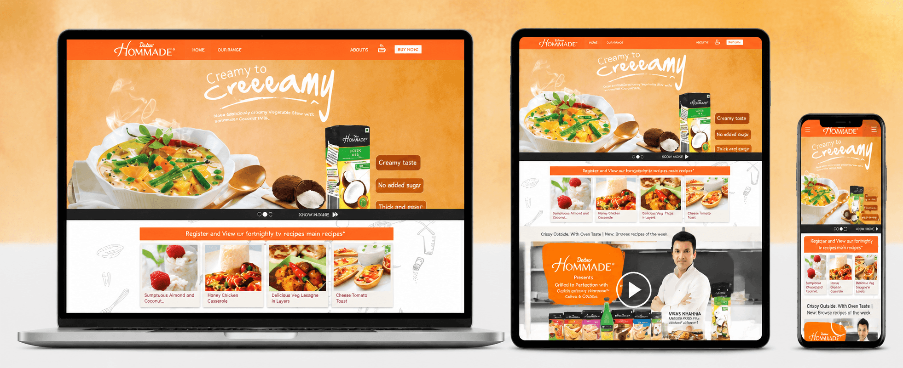
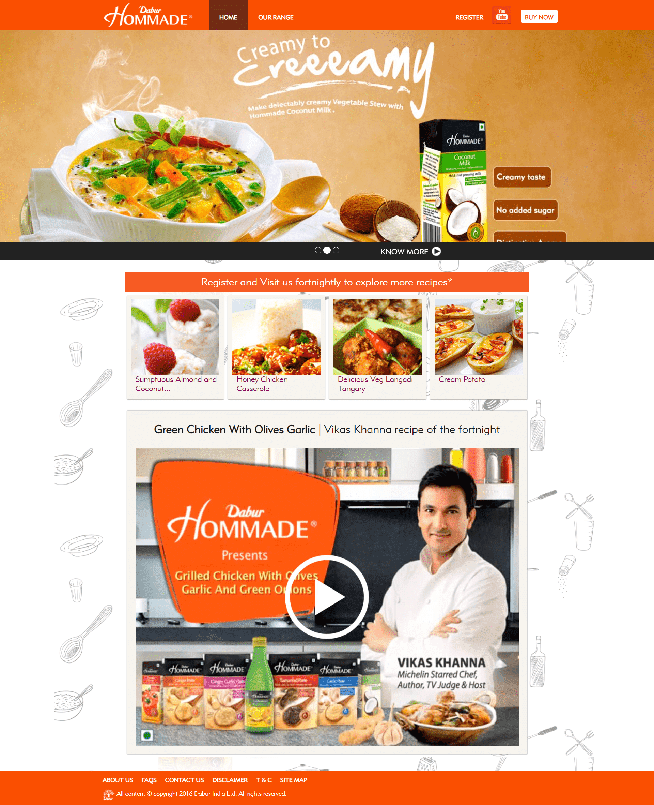
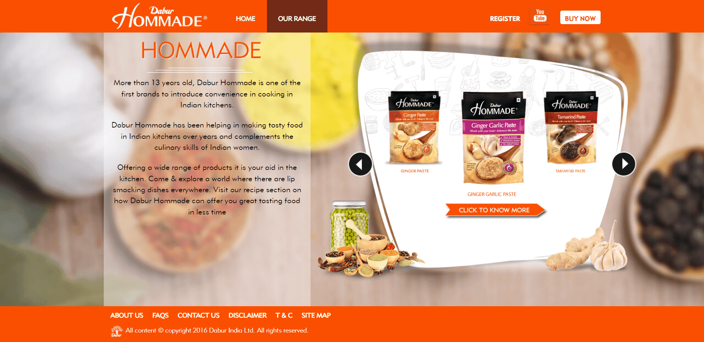

Help users understand cooking pastes, tomato puree, coconut milk and adjacent products without making the experience feel like a catalogue.
← Back to workConvenience in.
Dabur Hommade · Culinary Website
Convenience in.
Flavour intact.

Project overview
From kitchen helper
to culinary destination.
Dabur Hommade brings ready-to-use pastes, purees and culinary ingredients into everyday cooking through a promise of convenience and taste.
The website connects that product portfolio with recipe inspiration, useful discovery, chef-led content and purchase actions—giving the brand a role before, during and after the meal decision.
- Platform
- Brand + Recipes
- Portfolio
- Culinary Range
- Content
- Chef + Dishes
- Build
- Responsive
The central proposition
Ready when needed.
Fresh where it matters.
The digital experience balances two needs that often pull apart: saving preparation time and preserving the aroma, flavour and confidence associated with home cooking.
Product stories explain the shortcut. Recipes show what that shortcut makes possible.
The experience challenge
Organise the range.
Keep food at the centre.
Turn recipes and chef content into practical pathways back to products and everyday cooking occasions.
The culinary journey
Start with a dish.
End with confidence.
- 01
Inspire
Lead with finished food and an achievable cooking idea.
- 02
Explore
Move between recipes, ingredients and product possibilities.
- 03
Understand
Clarify how each Hommade product supports preparation.
- 04
Act
Connect registration, content return and buying actions.
The website experience
Products provide.
Recipes persuade.
A dish-led homepage creates appetite and repeat discovery. The portfolio experience then gives the range a clear structure and a useful relationship to ingredients and occasions.
Recipe-led homepageProduct promise, fortnightly ideas and chef content

Portfolio discoveryBrand story and product-range navigation

The content system
Useful today.
Worth returning to.
Dish-first imagery
Finished food communicates possibility before product detail begins.
Recipe cadence
Regular inspiration gives audiences a reason to revisit the platform.
Chef-led guidance
Video turns ingredients into understandable cooking applications.
Responsive utility
Recipes, products and actions remain usable in the kitchen on mobile.
The outcome
A product range
with a reason to return.
A responsive culinary destination that moves Hommade beyond product display—connecting convenience, taste, recipe inspiration and purchase in one useful journey.
Clearer portfolio
Products become easier to understand through cooking use and occasion.
Richer relevance
Recipes demonstrate how convenience can still create satisfying food.
Repeat utility
Fresh content gives the brand a continuing role in meal planning.
Less preparation.More possibility.
Building a useful brand destination?